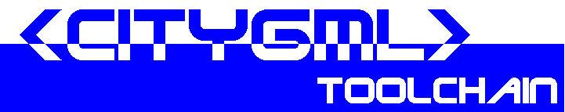

Copyright © 2009 Fachhochschule Gelsenkirchen. Alle Rechte vorbehalten.
Diese Software wurde von Tobias Kordts und Steffen Buss im Fachbereich Elektrotechnik am Standort Bocholt der Fachhochschule Gelsenkirchen entwickelt.
Eine aktuelle Version dieser Software erhalten Sie unter: http://www.citygml.de